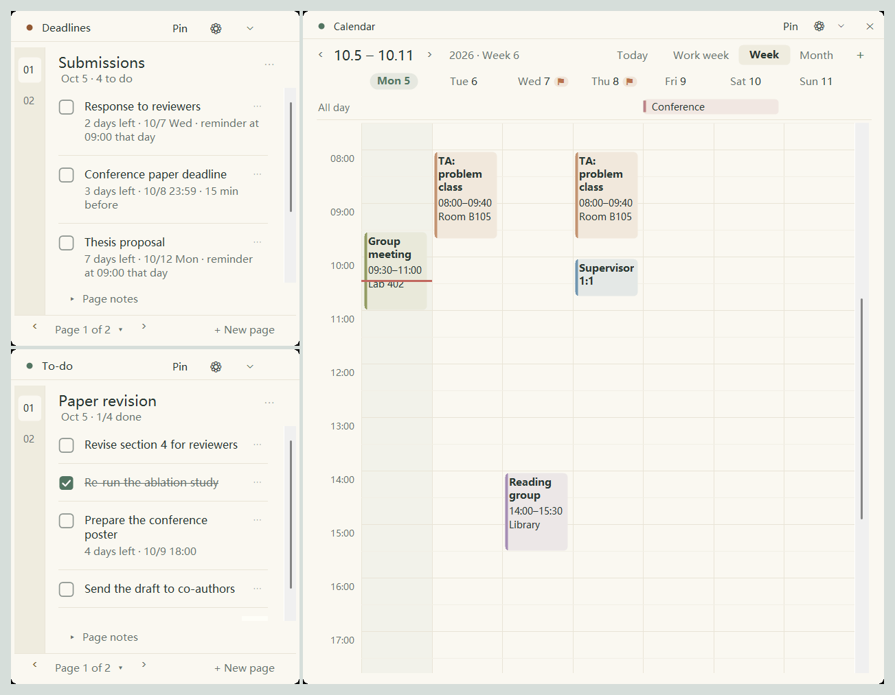
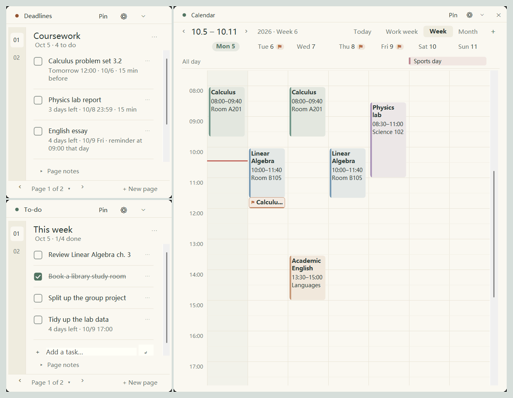
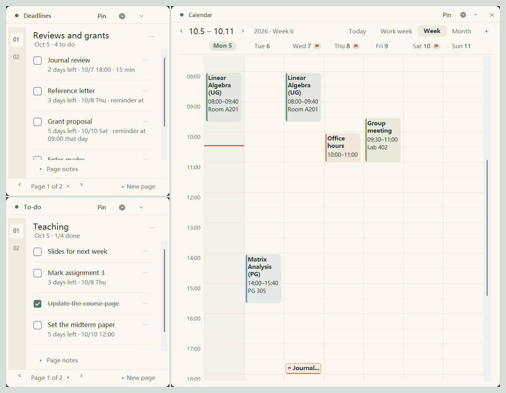
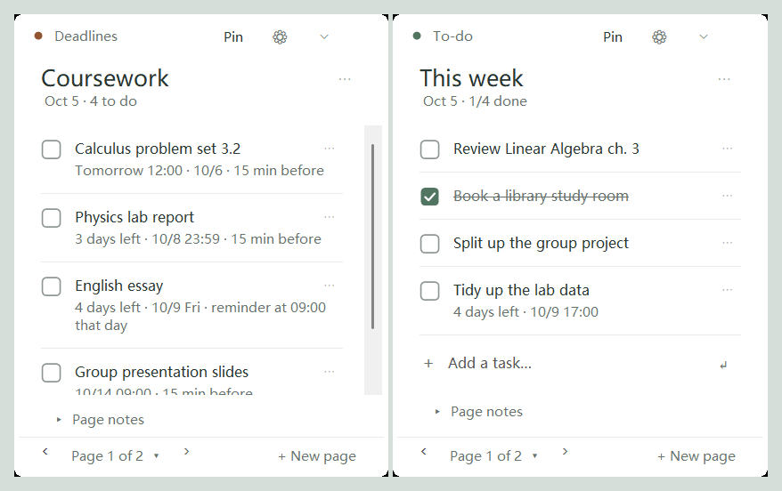

Deadlines should not depend on memory.
Your timetable, to-dos and deadlines, always on your desktop.
DeskStudy puts your week, your to-do list and every deadline into three small widgets that stay on your desktop. No app to open: look up and they are there. Deadlines are sorted by due time and marked on the calendar, and you are reminded before they are due.
- Open source · MIT
- No account
- Offline by default
- No ads
- English · 中文
- About 630 KB
- Unzip and run, no installer

Writing it down is easy. Seeing it again is the hard part.
What goes wrong in a term is usually the one thing you thought had a few more days.
Deadlines are everywhere
The course site, email, group chats, a conference page. Each deadline lives somewhere else, and only your memory adds them up.
To-do apps only work when opened
You write things down carefully, then never open the app again. A list you do not see is no list.
The timetable never matches reality
A meeting every other week, one moved class, a week off, a few days of holiday: a plain weekly timetable cannot say that.
One tool, three kinds of term
These are real screens of the program with sample data. Pick a role.

Enter your timetable once, never miss homework
- Your timetable, once a termThe whole term fills in, with the teaching week shown.
- Homework and lab reports as deadlinesSee "Tomorrow" and "3 days left"; the most urgent is always on top.
- Moved or cancelled classChange just that one; other weeks stay as they are.
- Double-click to editFix a typo where it is and press Enter.
Meetings, papers and teaching duties in one view
- Group meeting every two weeksSet it once. Moved this time? Change just that one.
- Submissions, revisions, proposalsSorted by due time, each with its own reminder, and visible on the calendar.
- Conferences as all-day eventsA multi-day event is one bar across the top of the calendar.
- Your school calendar insideSeminars and office hours from Outlook, synced read-only and colored by name.

Teaching, supervision and every deadline on one screen
- Courses, office hours, group meetingsOne week view, with fortnightly meetings shown correctly.
- Reviews, grants, grade entryBe reminded a day early for what matters, not just at the last minute.
- Exam weeks and breaks at a glanceAll-day events span the days they cover.
- Quiet hoursReminders wait until quiet hours end, then arrive together.
Made for the rhythm of terms and research
Nothing flashy: just what you find you cannot do without after a few weeks.
Weekly and two-weekly
A course can run on several days a week; fortnightly meetings work too.
Change just this one
Moved or cancelled classes are one-off changes; other weeks stay as they are.
Holidays and exam weeks
All-day events can span several days, sit under the dates, and repeat weekly.
Sorted by due time
The most urgent on top, done ones at the bottom; new ones take their place by themselves.
Deadlines on the calendar
Timed deadlines are small ⚑ tags; days with deadlines get a badge. Click one to jump to the task.
Your school calendar
Paste the link of a published Outlook calendar to show it read-only, or copy it into your own events once.
Per-task lead time
Each task has its own lead time; you are reminded then and when it is due. Missed ones arrive later.
Double-click to edit
Edit a task where it is; clicking elsewhere saves. Type and press Enter to add one.
Present, not in the way
Widgets stay behind your windows; the taskbar button or a shortcut brings them forward.
Out of the way for now
Fold a widget into its header bar at the bottom of the screen; unfold it when you need it.
Which week is it?
Enter your term dates and the calendar shows the teaching week.
English and 中文
Switch the interface between English and Chinese; it follows Windows the first time.
Five notebook layouts, one click to switch
The calendar follows, and nothing is lost when you switch. Theme, background, opacity and font size can be changed too.

White, a large title, hairlines between tasks. The simplest.
Why it is fine on a work computer
Unpublished research, students' grades and review assignments do not belong on someone else's server.
Your data stays here
No account, nothing uploaded; everything lives in one folder on your computer. DeskStudy is offline by default and only downloads the Outlook link you give it, if you subscribe to one.
Open source, check it yourself
MIT licensed, with no third-party runtime dependencies. Read the code or build it yourself. GitHub repository
Saved automatically, with a way back
Changes save by themselves and the previous good copy is kept. Before importing, restoring or copying an Outlook calendar, DeskStudy makes a backup.
Every release is verified
Version 1.6 has 768 automated checks in 24 suites, covering repeats, time zones, reminders, Outlook parsing and the interface; results and what was not verified are written down. Verification notes
How it compares with what you use now
| DeskStudy | Sticky notes | To-do and calendar apps on phone or web | |
|---|---|---|---|
| Seen without opening anything | Always on the desktop | Stuck to the screen | You have to open them |
| Reminders | Before and when due | None | Yes |
| Repeating timetable, one-off changes | Weekly, two-weekly, exceptions | None | Depends on the app |
| Outlook calendar | Read-only sync, or copy into your own | None | Depends on the app |
| Account | Not needed | Not needed | Usually needed |
| Where data lives | Only on this computer | On your desk | Usually in the cloud |
| Sync across devices | No | No | Usually |
The last column describes such apps in general; individual apps differ.
When it is not the right tool
Better to know before you download.
- Windows 10 and 11 only. No macOS, Linux or phone version.
- No sync between devices. Export a file on one computer and import it on the other.
- Outlook is read-only. Outlook events cannot be changed here, and Google Calendar is not supported. Published Outlook links carry no colors, so you set them per event name.
- No shared use. It is a personal tool.
- Not code-signed. Windows shows a warning the first time; you confirm it once.
- Reminders need DeskStudy running. Turn on "Start when I sign in to Windows".
- Win+D may hide the widgets too. The taskbar button or the shortcut brings them back.
Unzip, double-click, start
No installer, no administrator rights.
Download and unzip
Download the zip and unzip it into a folder that stays put, e.g. D:\DeskStudy.
Double-click DeskStudy.exe
You start with an empty calendar and two empty notebooks.
Add your week and tasks
Double-click the calendar to add a course; type at the end of a notebook and press Enter. Bring in your Outlook calendar if you like.
If Windows says "Windows protected your PC" the first time, choose More info → Run anyway; the program is not code-signed. "User Guide.html" in the zip explains everything with pictures. The interface follows your Windows language and can be switched to English under Settings → Appearance.
You might be wondering
Does it cost anything? Ads? In-app purchases?
No. DeskStudy is free and open source under the MIT license.
Does it upload my data?
No. Your courses, tasks and settings stay on this computer. If you subscribe to an Outlook calendar, DeskStudy only downloads from the link you gave it, and never uploads anything. The source is public if you want to check.
Can I use it with Outlook?
Yes. Publish your calendar in Outlook on the web, paste the ICS link into Settings, and it appears read-only on the calendar, refreshed on a schedule. You can also copy it into your own events once and stop syncing.
Is there a Chinese interface?
Yes. Switch between English and 中文 at the top of Settings → Appearance and restart. The first time, DeskStudy follows your Windows display language.
Does ✕ close the program?
No, it hides that widget and reminders continue. Double-click the tray icon to show everything; to quit, right-click the tray icon and choose Save and exit.
Where is it on the taskbar?
The widgets have no taskbar buttons of their own, but DeskStudy has one: click it to bring the widgets forward, click again to send them back, and right-click it to pin it. Settings can also switch to ordinary windows with title bars.
I did not get a reminder.
DeskStudy must be running and the task needs a due time and must not be ticked. Check Windows notification settings and Do not disturb as well.
New computer or a fresh Windows?
Export all data in Settings, copy the file over and import it.
What does uninstalling leave behind?
The program is just the unzipped folder: delete it. Your data is in a DeskStudy folder in your user profile; delete that too if you no longer need it. If you turned on starting with Windows, turn it off in Settings first.
Stop keeping this term's deadlines in your head
Free, open source, no account. Download, unzip, double-click.